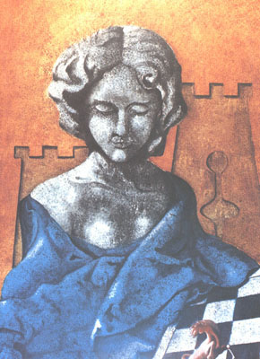

Tournament
Tournament |
 |
Tournament News & Notices:NOTE: The games in this tournament are being played in the game site called "It's Your Turn". To learn more about how to play chess in that site, just click on the little bird here:12/26/02: Today, on CNN they interviewed author Pat Conroy about his latest book My Losing Season. The author's main idea is that losing is sometimes good for us & that we learn more about life by losing than winning. Gee, if that is true, then it looks to me as though Blind-Fury is being a good teacher for us in this tournament and I'm getting very smart lately & didn't even know it. :>) 12/10/02: Friends, meet Caissa, the goddess of chess. Due to an inspiring chat with Martin L. today, I've learned a lot about the concept of Caissa. In the upper right corner I show a painting of her I found on the web (painter not given). To learn more about this interesting topic, click HERE
12/8/02: Please scroll to near the bottom of the page, to see the start of a new feature: Player information. |
Nov. 25, 2002 |
|
Welcome to all of those who have entered. This event will be a simple one-round affair, a round robin, where each player meets every other in one game. As there are 9 entrants, there will be 8 games, four with white and four with black.
Refer to the chart below, and issue a one-game challenge of King's Corner chess to each of the four players whose numbers are indicated to the right of your name with the letter "b". (This will give you the black pieces.) Set the time control at 7 days. Generally though, most moves should be made much quicker. If you have a trip or vacation that you can anticipate in advance, let your opponents know and the time limit can be adjusted accordingly. When all this has been accomplished, every player will have 8 games in progress. Please let me know if you have trouble contacting anyone. Send results (wins) to me as soon as possible and I will post them in the crosstable. The white player reports a draw. Best of luck to the competitors!! -- Terry ( emmail link is down below ) |
| #1 | #2 | #3 | #4 | #5 | #6 | #7 | #8 | #9 | W | L | D | SCORE | ||
| Black Knight | . | . | ||||||||||||
| Blind-Fury | . | . | ||||||||||||
| Dent Man | . | . | ||||||||||||
| HAJBEKO YOSSI | W | . | W | 4 | . | |||||||||
| Tony Gardner | . | . | ||||||||||||
| Martin L. | . | . | ||||||||||||
| spocko | . | . | ||||||||||||
| Michaelangelo | . | 2 | . | |||||||||||
| Terry | . | |||||||||||||
| Player named on left still has to challenge one numbered above | |
| Player named on left waiting to be challenged by one numbered above | |
| Game is currently in progress | |
| Game won; worth 4 points | |
| Game lost; worth 1 point | |
| Game drawn; worth 2 points | |
| Game Timed-out; worth 0 points |
Scoring SystemThis will be the scoring system for this tournament:
This is being done for 2 reasons, basically. One is to promote fighting chess & discourage needless draws. Under this system in 2 games a win and a loss earns 5 points, whereas two draws earns only 4 points. So it's more important to take a few risks; but it's still a personal decision. Two is to encourage players not to merely abandon a hopeless game, taking the loss via the "expiration of the time limit" rule used in these chess sites, without informing their opponents directly. Therefore, think of it as a little reward for being courteous to others. (I have used this system before; it works.) -- Terry (trottermath@gmail.com)
|
Player information
Here I will present some information about the persons in our tournament, so that we can get to know the "real person behind the userid". (If you wish to share your own personal facts, just let me know. Nothing will be shown here without your permission.) I will begin with myself.
  
SpockoSpocko sent the following email to me:
Hi my name is Rick Valdron. I am 42 and by my userid you can tell that I am a trekkie. Spocko came from an episode in the original series. I like science-fiction and science-fantasy a lot, along with war games and strategy games. I have worked in industial roofing for the last 19 years. I live in London, Ontario, Canada. I am divorced and have 12 and almost 13 year old daughter and 16 year old step-son. I am a hardy Canadien. My daughter and I are clan of the wolf. hope to get pic to you soon
Tony GardnerIn his own words:
You already know my name and place of residence from my profile, and that I am a tenacious board game addict, so here is some more personal detail:
Black KnightHere's the story:
Hello, my name is Malcolm and I am 52. I have worked as a Senior Biomedical Scientist in Laboratory Medicine at a very busy hospital in the centre of UK for about 33 years. I have a lovely wife and three children.
Martin L.Hi! My name is Martin Landry ("Peter Pawn" on IYT or "Indiagonal Jones" on "Brainking.com" or many others). I'm 44 years old and have 3 children, 2 girls, 1 little boy separated. I've studied Ancient History, Anthropology and Archeology at the University of Montreal some many years ago, so what attracts me for the game of chess, is not only the game itself but all the "stuff" around and the history of it for sure I live in Quebec, Canada, so my natural language is French by the way. |
| Can you solve this famous position from a Fischer game? Write to me when you solve it.
I received the following comments from Tony: It looks to me, sitting here several hundred miles away from you, that White can just bust down the barn door with Bxe6! ... QxB or ... Kf8 loses immediately to Qh6, otherwise White can continue with hxg6. Being an avid tactician, I spotted that combination right away. It has been quite a while, but once for over 7 years I ran a column on chess problems for a game club magazine.
|
| Comments? Send e-mail. | Back to top | Go back to Home Page | Go back to Contents |